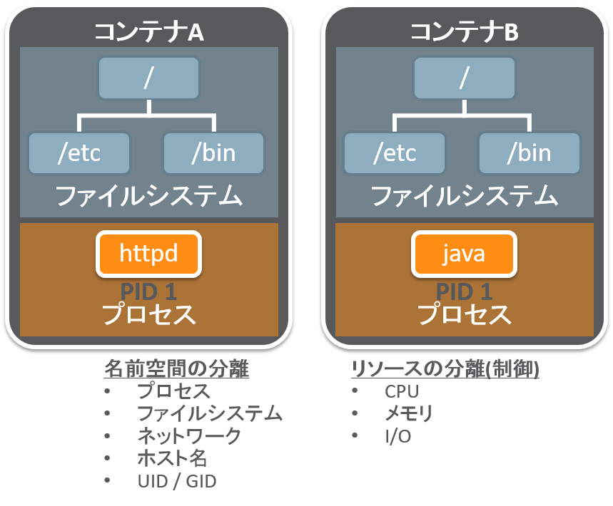
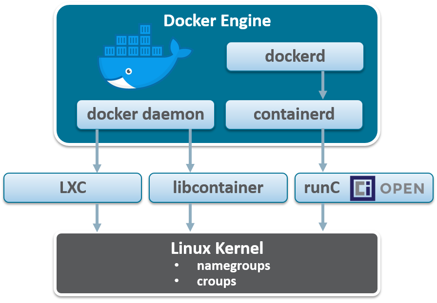
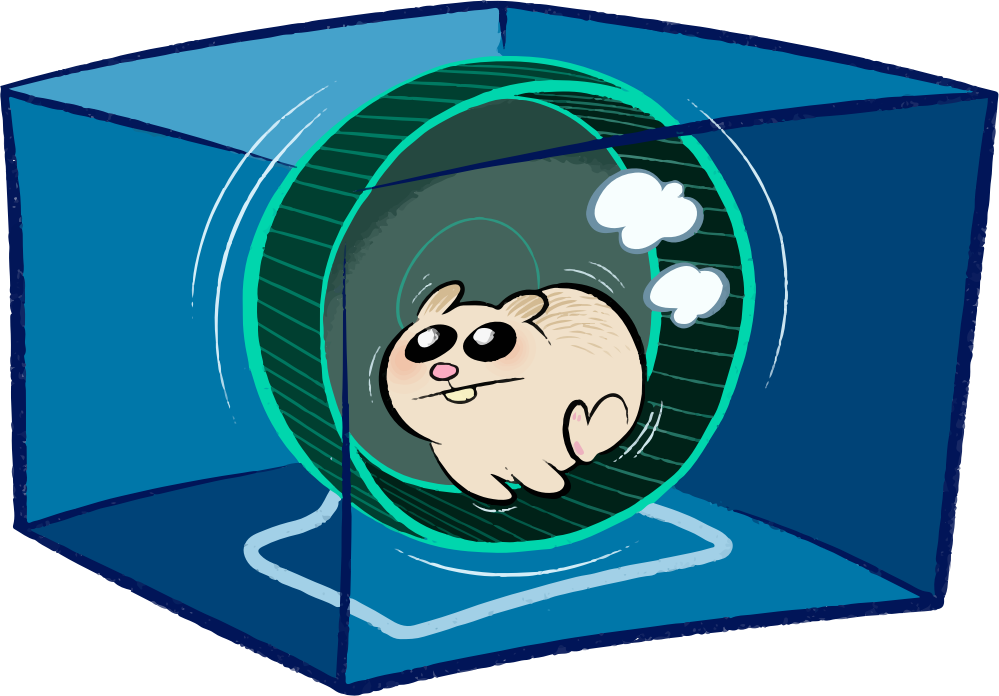

コンテナ技術/CCS/ACCS

Shinya Yanagihara
June-21-2017
コンテナ技術
コンテナ型仮想化
ファイルシステムの差分管理
コンテナ技術の歴史
| # | Year | Name |
|---|---|---|
| 1 | 1979 | choot |
| 2 | 2000 | FreeBSD Jail |
| 3 | 2005 | Solaris Containers |
| 4 | 2008 | LXC |
| 5 | 2014 | Docker |
chroot
ルートディレクトリを変更するシステムコール
FreeBSD Jail
chroot を拡張し、ファイルシステムの名前空間以外も隔離 - プロセスリスト - ネットワークスタック ユースケース：root 権限の一般ユーザへの委譲
Solaris Containers
LXC (Linux Containers)
単一の Linux カーネルをプロセス毎に隔離し、複数の仮想サーバを制御する仮想環境
- namespaces (カーネルの名前空間)
- cgroups (コントロールグループ )

namespaces
| 名前空間 | 隔離対象 |
|---|---|
| Mount | ファイルシステム |
| UTS | ホスト名, NIS ドメイン名 |
| IPC | プロセス間通信, POSIX メッセージキュー |
| PID | プロセスID, コンテナが違えば同一 ID 可 |
| Network | ネットワークデバイス, IP アドレス, IP テーブル等 |
| User | ユーザ (uid), グループ (group) |
cgroups
| サブシステム | 機能概要 |
|---|---|
| cpu | CPUのスケジューリングを制御 相対配分: CPU時間の割当を割合で指定 帯域制御: タスクが実行できる合計時間を制限 |
| cpuacct | グループ内のタスクが消費するCPU時間をレポート |
| cpuset | グループへのCPU，メモリノードの割り当て |
| memory | グループ内のタスクが消費するメモリリソースのレポートと制限 |
| blkio | ブロックデバイスに対する制限 重みづけ配分: I/Oアクセスの比率を割合で指定 帯域制限: 各デバイスに対して行える操作数の制限 |
| devices | グループ内のタスクのデバイスへのアクセスの許可，禁止の指定 |
| net_cls | グループ内のプロセスが発信するパケットの制御 |
| net_prio | グループ内のタスクのネットワークの優先度の制御 |
| freezer | グループ内のプロセス全てを同時に一時停止・再開 |
Docker
- Docker <= 0.8 は LXC (や libvirt, systemd-nspawn) 経由で名前空間, cgroups 等を利用
- Docker >= 0.9 は libcontainer ドライバ経由でカーネルのコンテナAPIを直接コールするため、LXCがなくても稼働可能
Docker Engine で制御

Docker Engine アーキテクチャ

runC
- Docker のコアコンテナランタイム
- Docker >= 1.11 は、OCI 準拠の構成となり、Docker Engine っが containerd と通信し、containerd はランタイムとして、runC をす使用する
Open Containers Initiative
- コンテナの標準仕様を議論・策定する標準化団体
runC
- オープン・コンテナ・ランタイム仕様に準拠するリファレンス実装
- runC のみでCLIとして機能しコンテナの起動が可能（デーモン不要）
- コンテナの実行レイヤのコアランタイム

containerd
- Docker のコアコンテナランタイム
- 実行中のコンテナの監視・管理
- コンテナイメージの管理（レジストリへのpush/pull）
Container Cloud Service
dockerd
- Docker >= 1.12 は、docker daemon が、dockerd に変更
- docker swarm との統合
- 1.11までは、クラスタ管理のために、Docker Engine とは別に Swarm マネージャ/Swarm ノードがj必要
- 1.12からは、dockerd がDocker Daemon の役割と、Swarm ノードの役割を担う
Sub Slide
- list
- list
Application Container Cloud Service
Sub Slide
- list
- list